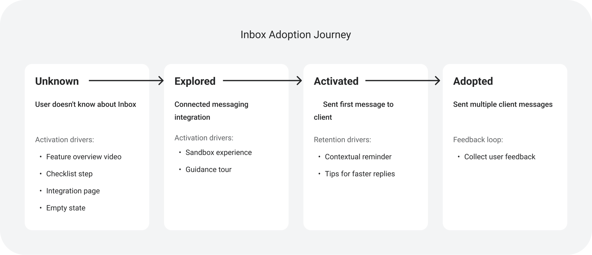
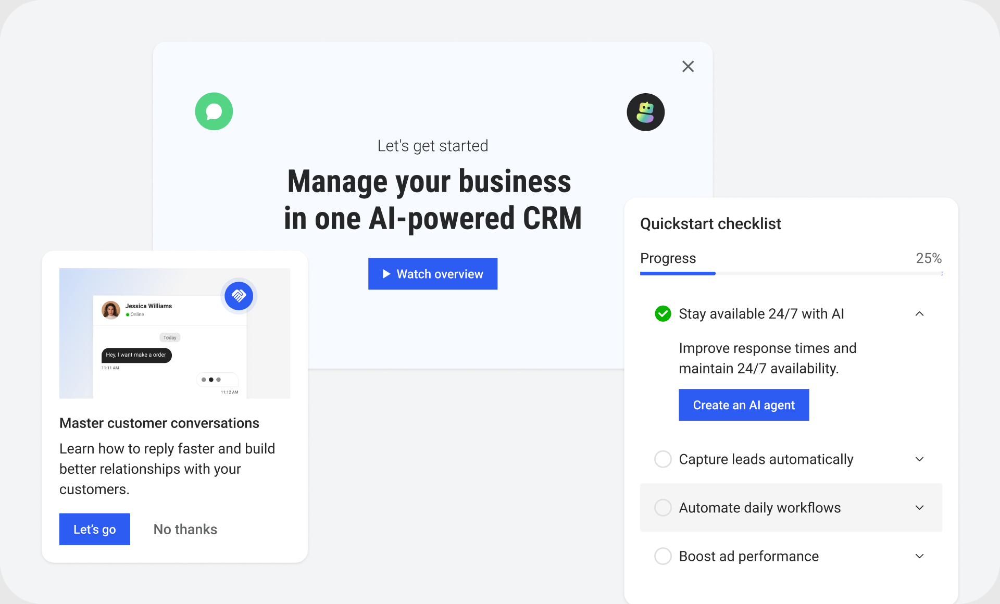
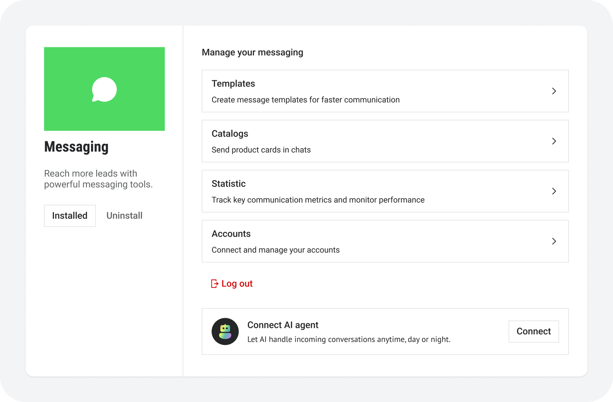
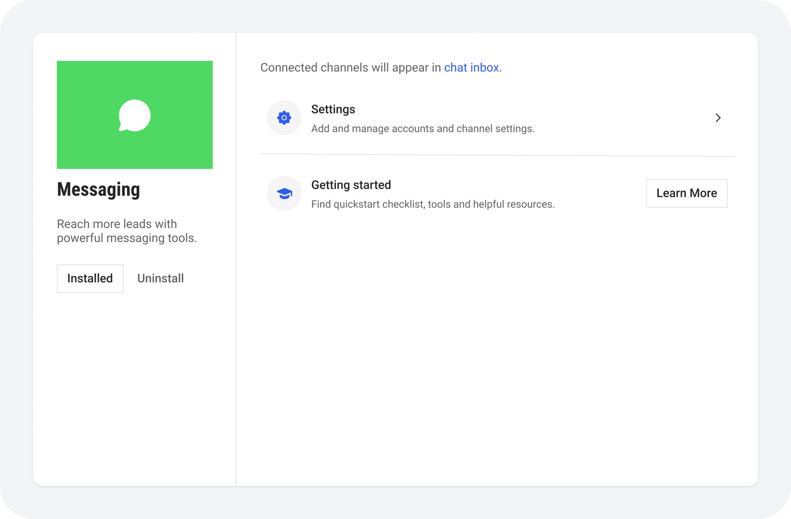
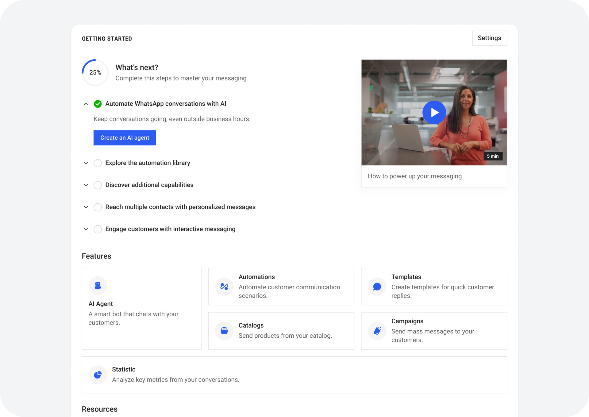
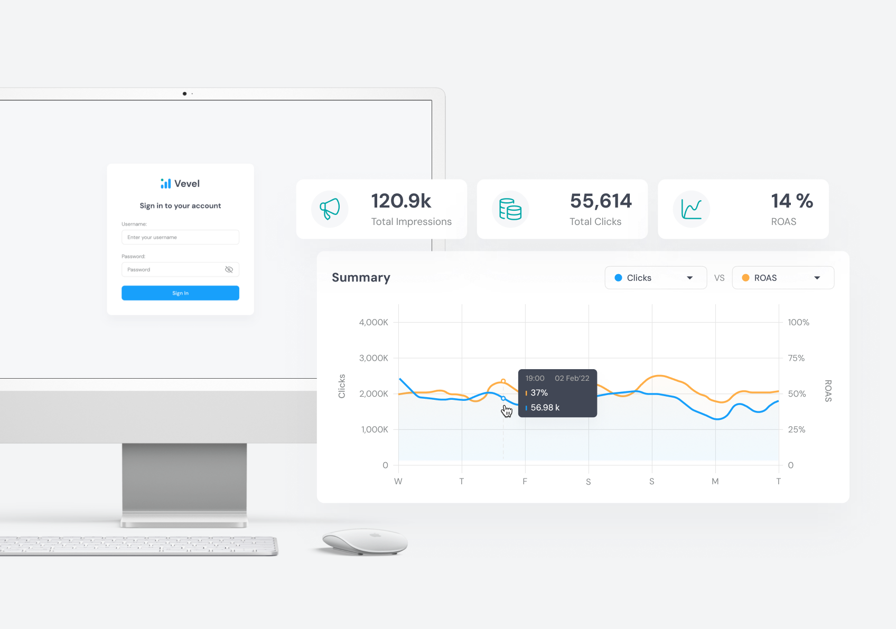

Kommo ранее amoCRM — международная CRM для продаж и коммуникации с клиентами через мессенджеры с 1М+ MAU
Задача
Довести новых пользователей до реальной ценности продукта.
Результаты
+4% к конверсии триал → подписка и переиспользуемый фреймворк активации для всего продукта.
Активация: из триала в платную подписку
Проблема
Команда пришла с гипотезой: пользователи не понимают ценность продукта и уходят, не дойдя до оплаты. Интервью показали другое — большинство успешно начинали работать с продуктом: подключали мессенджеры, настраивали CRM и вели сделки.
Проблема возникала позже. Многие не использовали дополнительные функции не потому, что они были сложными, а потому что не знали об их существовании или не понимали, как начать ими пользоваться.
Внутри компании у этого была своя причина: каждая команда продвигала свои функции по-своему, единого подхода к активации не было. Возможности появлялись в разных местах интерфейса, поэтому пользователь видел набор несвязанных подсказок, которые чаще всего игнорировал.
Ситуацию усложняло и то, что путь пользователя был нелинейным: он зависел от целей, подключённых интеграций, состояния аккаунта и точки входа в продукт. Поэтому единого онбординга, который подошёл бы всем, просто не существовало.
Инсайт
Разбор интервью и пользовательских сценариев дал два тезиса, которые развернули задачу:
- Пользователи уходили не от сложности, а от незнания. Ценность продукта была им доступна — они просто до неё не добирались.
- Но и продвигать функцию «в лоб» бесполезно: промо ничего не значит, пока человек не столкнулся с задачей, которую эта функция решает. Работает не факт «у нас такое есть», а момент — пользователь в десятый раз пишет вручную одно и то же сообщение, и ровно здесь предложение сделать из него шаблон попадает в реальную потребность.
Отсюда поворот: я перестал проектировать онбординг под конкретную фичу и начал описывать модель освоения — в которой у каждого этапа знакомства с функцией есть свой момент и своя механика.
Adoption Matrix
Чтобы систематизировать сценарии, я использовал Adoption Matrix — модель, которая описывает путь пользователя от первого знакомства с функцией до её регулярного использования.

Для каждого этапа я определял подходящие механики взаимодействия:
- feature overview;
- onboarding-чеклисты;
- empty states;
- контекстные подсказки;
- промо-блоки;
- запросы обратной связи.
Вместо того чтобы каждая команда решала задачу активации по-своему, продукт получил единый фреймворк активации и продвижения фич, который можно применять к любой его части.

Первое применение: мессенджеры
Первым сценарием, куда легла модель, стали интеграции с мессенджерами — основной узел продукта, к которому привязаны фичи из других разделов: бродкастинг, автоматизация, AI-агент.
Подключение и использование интеграций строилось вокруг legacy-логики с модальными окнами. Такой подход решал задачу подключения, но почти не помогал понять, что делать дальше и какую ценность пользователь получает после подключения интеграции.
Сам подход накладывал ряд ограничений:
- недостаточно места, чтобы объяснить возможности;
- нет следующего шага после подключения;
- невозможно последовательно знакомить пользователя с функциональностью;
- нет точек для продвижения новых возможностей продукта.

Переработать сценарий целиком было нельзя: изменения пришлось бы раскатывать на все интеграции продукта, а это кратный рост объёма разработки. Поэтому сам flow подключения я не трогал — менял то, что происходит после него.
Обучению нужно было место, которого в модальном окне нет: туда помещается форма подключения, но не рассказ о том, что делать дальше. Поэтому я развёл две задачи.
Модальные окна остались отвечать только за подключение и управление интеграцией. Обучение и продвижение возможностей переехали на новую страницу Getting started.

Getting started стала промежуточным этапом между «интеграция подключена» и «человек пользуется продуктом». На ней собраны:
- чек-лист следующих шагов;
- обучающее видео;
- обзор ключевых возможностей интеграции;
- ссылки на полезные статьи.

Финальный результат
Решение получилось компромиссным: legacy-флоу подключения остался жив — мы его не переписали, а обошли, вынеся обучение и продвижение возможностей туда, где для них хватало места.
По оценке продуктовой команды, упрощение flow подключения вместе с запуском Getting started дали около +4% к конверсии триал → подписка. Оценка основана на сравнении когорт триальных аккаунтов, подключивших мессенджер до релиза и после него.
Важнее локального результата оказался побочный: команды перестали решать задачу активации каждая по-своему. Вместо точечных решений появился единый подход к проектированию product adoption, который масштабируется на разные части системы.
Это позволило:
- показать, что обучение продукту влияет на конверсию, а не просто «повышает удобство»;
- системно знакомить пользователей с новыми возможностями внутри интерфейса;
- выстроить единый подход к продвижению новых функций;
- снизить зависимость пользователей от обращений в поддержку.
Заключение
Этот опыт показал мне, что работа над крупными enterprise-продуктами — это прежде всего работа с людьми, ограничениями и сложной системой, а уже потом с интерфейсами.
Практически каждое решение требовало глубокого погружения в существующую бизнес-логику, аргументации своих решений перед стейкхолдерами, длительных обсуждений с разработчиками, продакт-менеджерами и другими дизайнерами, а также поиска компромиссов между потребностями пользователей, целями бизнеса, техническими ограничениями и возможностями команды.
Именно здесь я сформировался как продуктовый дизайнер: научился мыслить системно, принимать решения в условиях неопределённости, отстаивать их перед стейкхолдерами и искать решения, которые приносят ценность пользователям и при этом остаются реалистичными для бизнеса и разработки.
Другие кейсы
AdTech-платформа
Как редизайн визарда сократил ключевой флоу с 14 до 8 минут и помог закрыть сделки с Farfetch и Target

Фитнес-приложение
Запустил фитнес-приложение для инфлюенсера с аудиторией 2+ млн подписчиков

SaaS для HR-менеджеров и рекрутеров в медицине
Ускорил проверку кандидатов в 2,3 раза для крупного клиента при выходе на рынок США